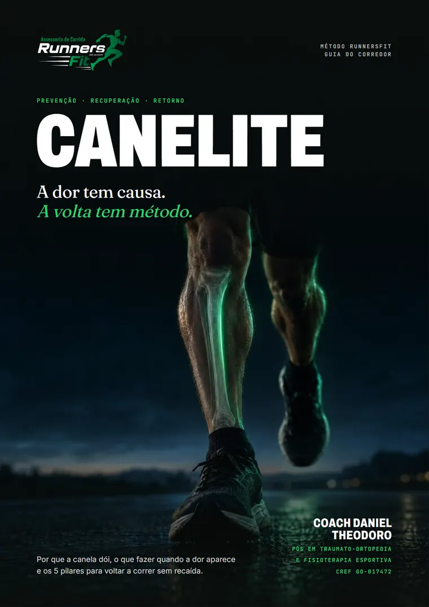
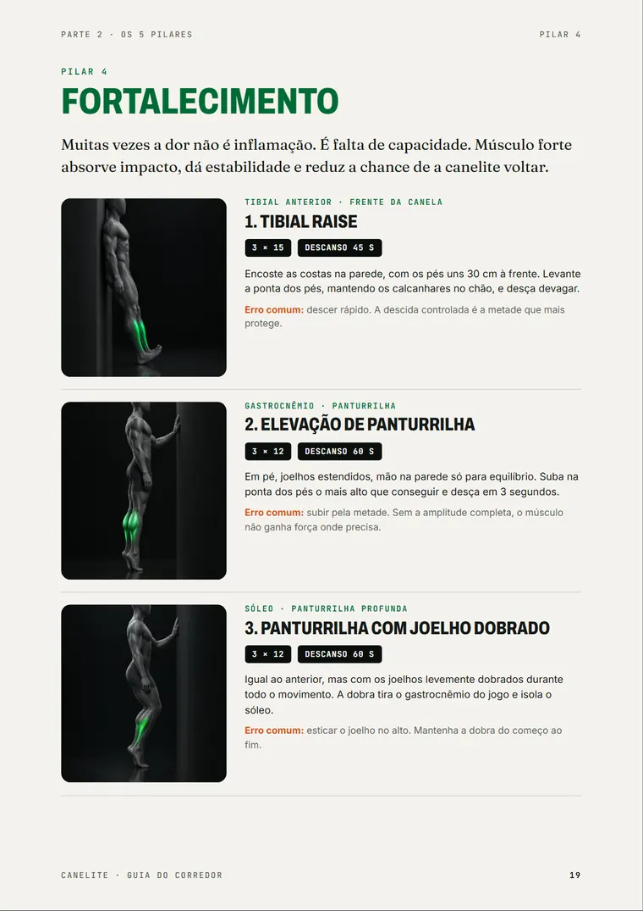
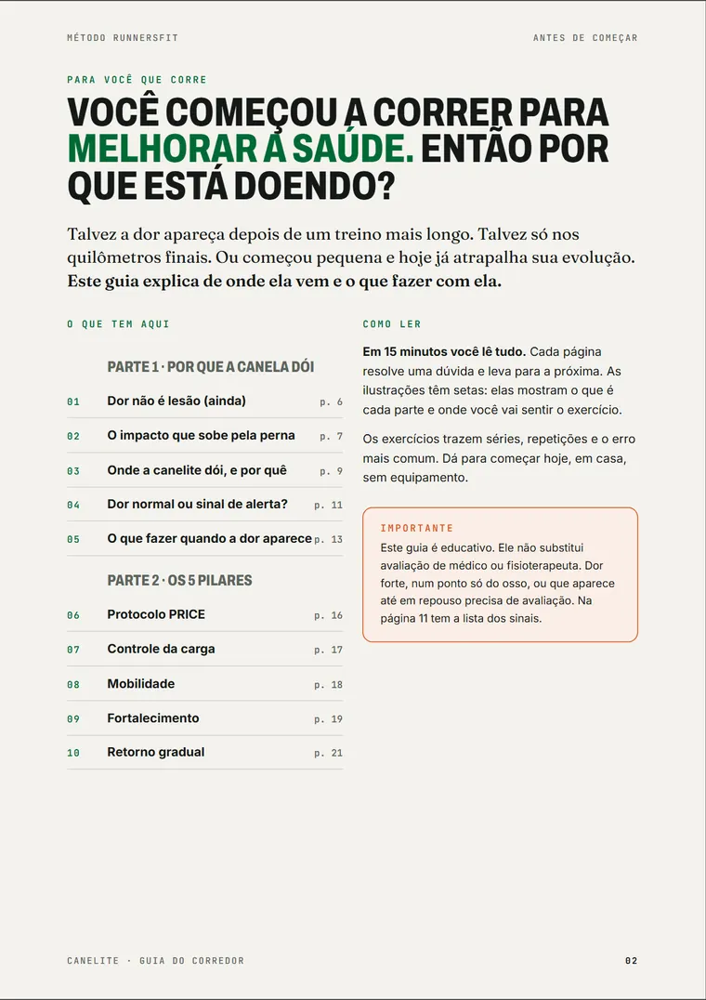
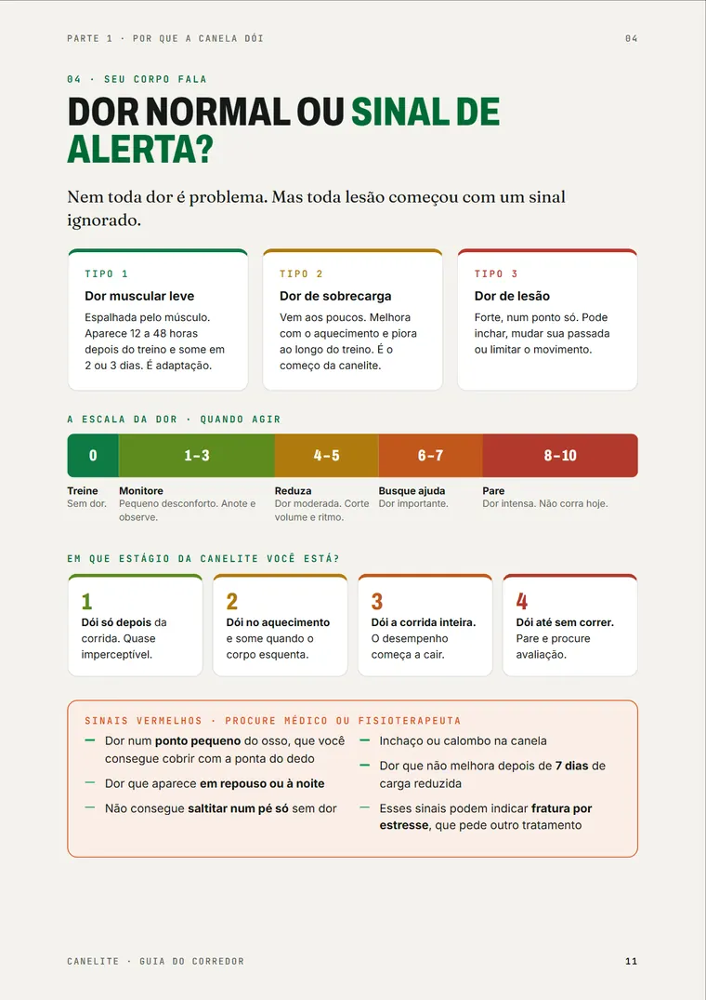
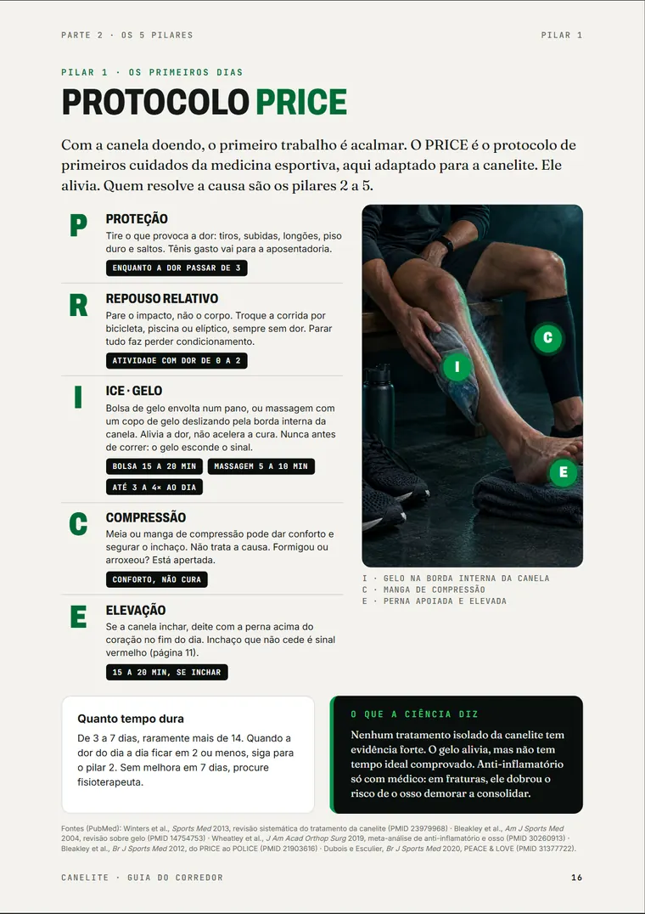
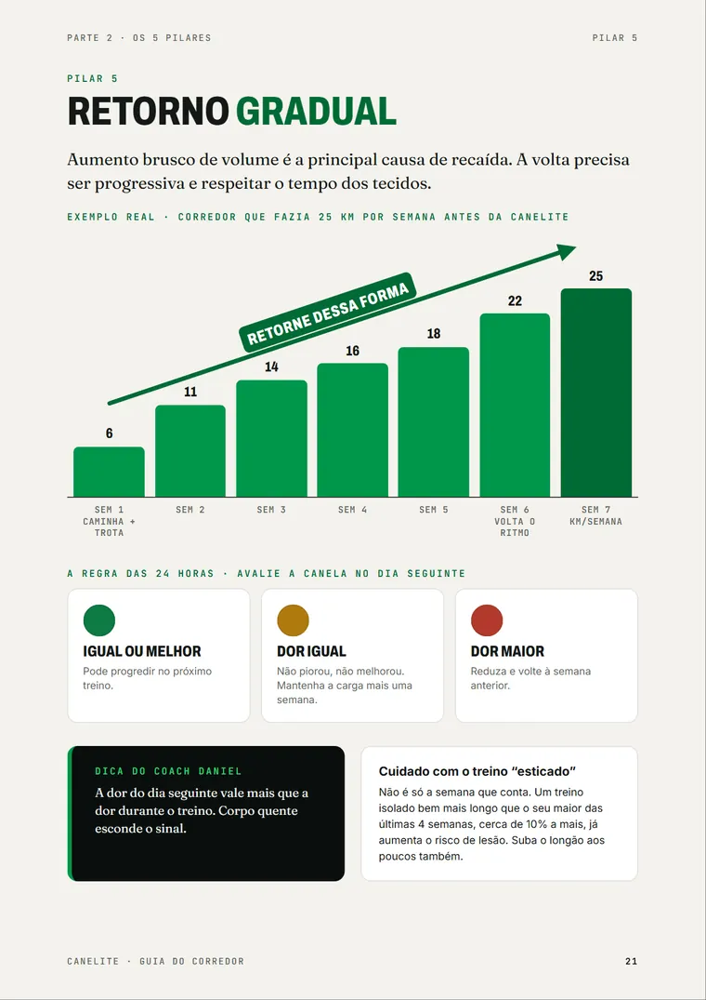

Minha canela dói depois do treino. É normal?
Daniel Theodoro Treinador de corrida em Jataí · CREF GO-017472
— Às vezes é. Às vezes é o começo da canelite. Escrevi um guia pra você saber a diferença e voltar a correr com critério.

Canelite: o método RunnersFit
PDF no seu e-mail assim que o pagamento aprova · 7 dias pra pedir o dinheiro de volta · PIX ou cartão
Na lista, R$ 19,90 até 06/11, às 23h59. Depois, R$ 29,90
Como eu sei se é só cansaço ou se já é lesão?
Daniel
— Pelo jeito que a dor aparece. Dor espalhada no músculo, que some em 2 ou 3 dias, é o corpo se adaptando. Dor na borda de dentro da canela, que volta a cada treino, eu separo em quatro estágios no guia. Antes, confere os sinais de alerta. Depois, marca o estágio que mais parece com o seu.
E o que tem nesse guia?
Daniel
— Vinte e cinco páginas, na ordem em que você vai precisar delas. Dá uma olhada em algumas. Abre a página pra ver grande.





Daniel
— A volta tem cinco pilares, e a ordem importa.
Protocolo PRICE
Acalmar a dor nos primeiros dias.
Controle da carga
Ajustar sem parar tudo. A dor vira termômetro, de 0 a 10.
Mobilidade
Soltar o tornozelo travado, que joga o impacto na tíbia.
Fortalecimento
6 exercícios em casa, sem equipamento, em cerca de 25 minutos, 3 vezes por semana.
Retorno gradual
Voltar por critério, não por calendário. A regra das 24 horas decide cada passo.
— A dor do dia seguinte vale mais que a dor durante o treino. Corpo quente esconde o sinal.
E quem é você pra me dizer isso?
Daniel
— Sou treinador de corrida aqui em Jataí. Corro há mais de dez anos, dos 400 metros rasos aos 5 km de rua. Fiz pós em Traumato-ortopedia e Fisioterapia Esportiva, a área que estuda lesões como a canelite. Cada princípio do guia passou primeiro pelo meu treino, antes de chegar nos meus alunos.
- CREF
- GO-017472
- Na pista
- desde 2015
- Formação
- Educação Física
- Pós
- Traumato-ortopedia e Fisioterapia Esportiva
Disciplina antes de motivação. Técnica antes de volume. Saúde antes do pace.
A página dos primeiros cuidados, no pilar 1, cita cinco fontes do PubMed, com o número de cada uma pra você conferir.
Rascunho. Estes depoimentos são exemplos pra mostrar a seção. Antes de publicar, entram depoimentos reais, com nome, foto e autorização por escrito. Se não vierem, a seção sai.
Alguém já fez isso?
Daniel
— Quem passou pela dor explica melhor que eu.
Eu achava que toda dor na canela era sinal pra parar tudo. Aprendi a diferença e só cortei o volume.
Os exercícios cabem antes do trabalho. Três vezes por semana, menos de meia hora.
Eu tinha subido o volume rápido demais pra minha primeira prova. Aprendi a segurar o longão: menos de 10% acima do maior treino das últimas quatro semanas.
E se o meu caso for mais sério?
Daniel
— Aí o guia não é o seu próximo passo. Prefiro te dizer isso antes de você comprar.
- Dor num ponto pequeno do osso, que dá pra cobrir com a ponta do dedo
- Dor em repouso ou à noite
- Inchaço ou calombo na canela
- Você já está tratando com fisioterapeuta
Nesses casos, quem cuida da canela é o médico ou o fisioterapeuta. Depois da liberação, o guia te ajuda a voltar com critério.
Tenho mais umas dúvidas.
Daniel
— Pode mandar.
Tem vídeo de graça no YouTube sobre isso.
Tem. O guia junta numa ordem só o que fazer, quando avançar e quando parar, com o teste de volta e a regra das 24 horas.
E se não for canelite?
A página 11 mostra os sinais de fratura por estresse e manda procurar avaliação. O guia não diagnostica ninguém.
Não tenho tempo pra exercício.
São 6 exercícios em casa, sem equipamento, em cerca de 25 minutos, três vezes por semana.
Não sou de Jataí.
Não precisa ser. O guia serve pra corredor de qualquer cidade. Só a assessoria é presencial.
Como eu recebo?
Assim que o pagamento aprova, o PDF chega no seu e-mail. Abre no celular, sem instalar nada.
E se eu não gostar?
Você tem 7 dias pra pedir o dinheiro de volta, sem precisar explicar.
O guia substitui a fisioterapia?
Não. Ele é pra quem sente a dor de sobrecarga e quer saber o que fazer. Dor forte, em repouso ou com inchaço pede avaliação.
Quanto custa?
Daniel
— R$ 29,90, uma vez só. O PDF fica com você.
— Pra quem está na lista, R$ 19,90 até 06/11, às 23h59. Depois, R$ 29,90. O PDF fica com você.
— Abre em 04/11. Quem entra na lista paga R$ 19,90 até 06/11, às 23h59. Depois, R$ 29,90.
R$ 29,90
R$ 29,90 R$ 19,90
Preço da lista até 06/11, às 23h59.
Abre em 04/11
PDF no seu e-mail assim que o pagamento aprova · 7 dias pra pedir o dinheiro de volta · PIX ou cartão
Entra na lista do WhatsApp · Aviso no dia da abertura · Sai quando quiser
- 25 páginas ilustradas, pra ler em 15 minutos
- A escala da dor e os sinais de alerta
- Os 5 pilares, na ordem certa
- 6 exercícios com ilustração, séries e o erro mais comum
- O teste pra saber se você está pronto pra voltar
Garantia de 7 dias. Pediu, a gente devolve, sem pergunta. É o seu direito pelo Código de Defesa do Consumidor.
Pagamento pela plataforma de vendas. RunnersFit · CNPJ a preencher